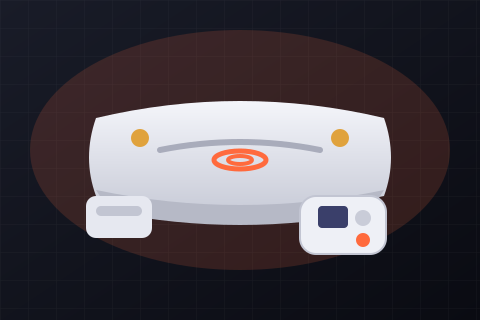

Collection index / hardware
The hardware hub
Choose a spoke from the archive. Each entry maps the machine to its technical DNA, cultural moment and the memories it made possible.
Open exhibits
06 catalogued / 24 awaiting restoration
-

-

-

-

-

-

Quick comparison
Six machines, side by side.
| System | Year | Media | Signature title |
|---|---|---|---|
| Super NES | 1990 | Cartridge | Super Metroid |
| Sega Genesis | 1988 | Cartridge | Sonic the Hedgehog 2 |
| PlayStation | 1994 | CD-ROM | Metal Gear Solid |
| Nintendo 64 | 1996 | Cartridge | Mario Kart 64 |
| Dreamcast | 1998 | GD-ROM | Shenmue |
| Game Boy Advance | 2001 | Game Pak | Advance Wars |
Live cabinet / random access
Pull a mystery exhibit
Hit the switch and let the archive choose your next stop. Every visit lands on a different machine.
Signal locked
AWAITING INPUT
SYSTEM READY // 00:00:00